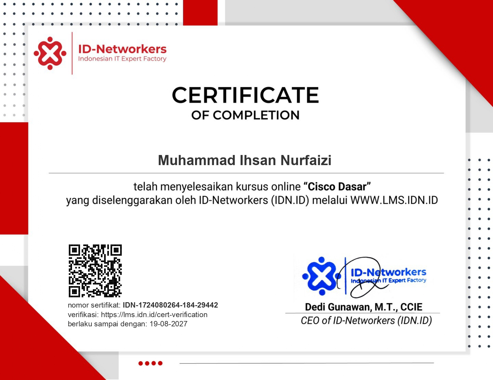
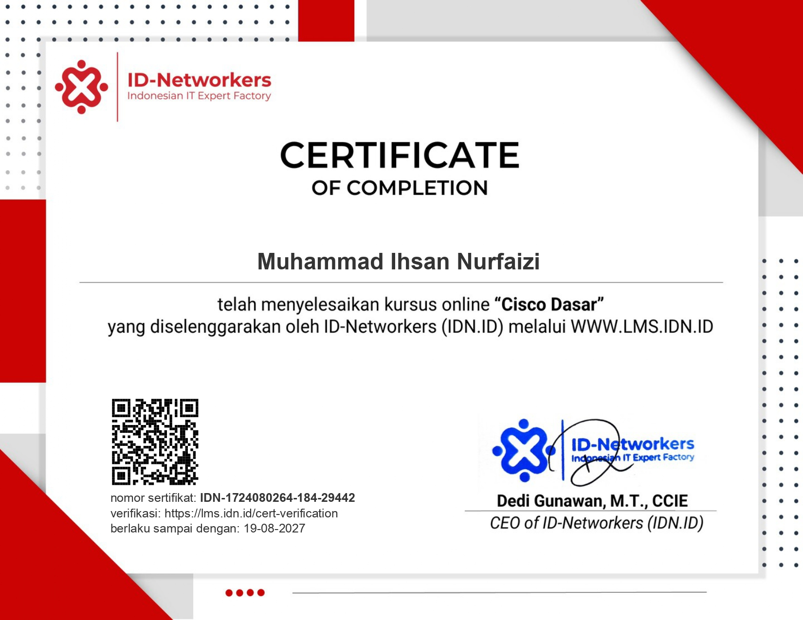
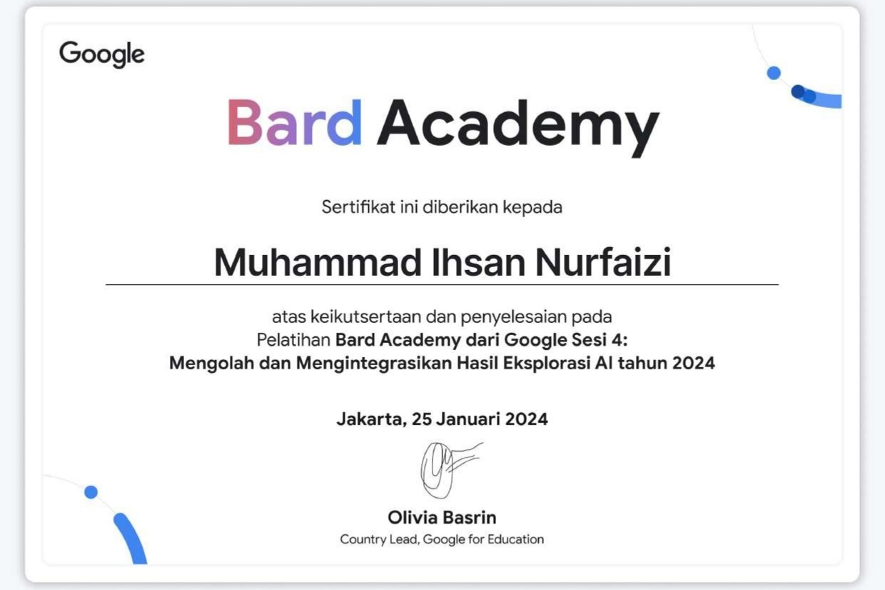
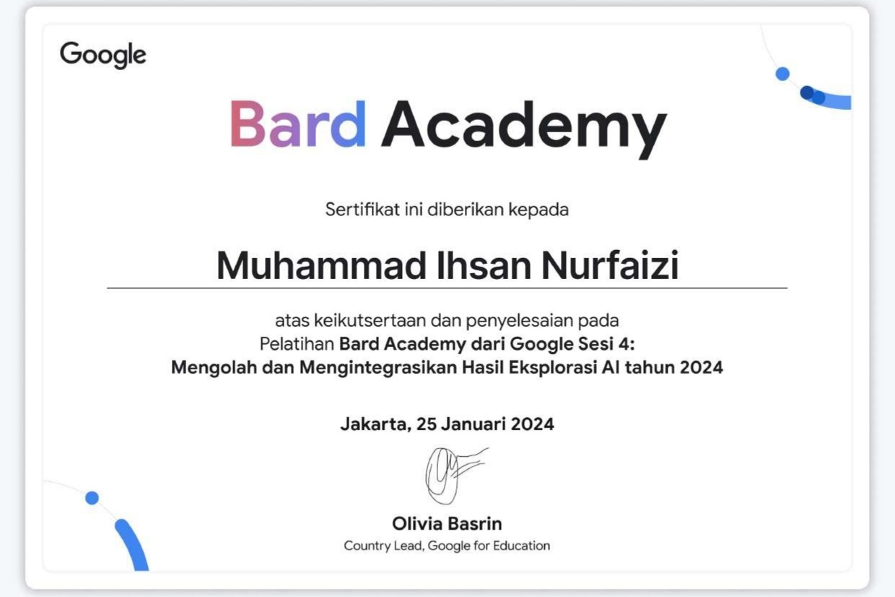

hi, it's Ihsan
i'm a
Halo, saya seorang siswa dari SMK Plus Pelita Nusantara dengan jurusan Teknik Komputer Jaringan. Jaringan komputer merupakan bidang yang luas, mencakup berbagai perangkat seperti Mikrotik, Cisco, dan lainnya. Saya bersyukur telah mempelajari berbagai materi jaringan. Namun, saya ingin memperluas pengetahuan saya lebih jauh, khususnya dalam bidang jaringan serat optik.


 

 
